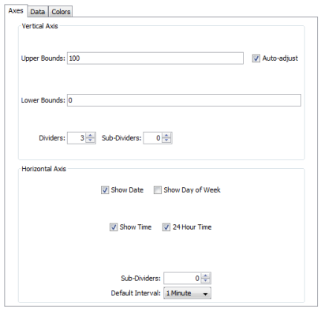
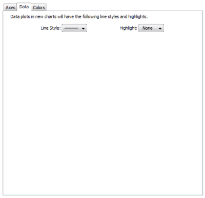
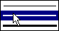
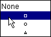
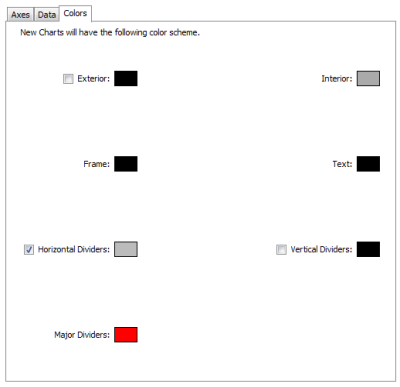

Charts (see Creating Charts and Using Charts) can show historical data for values received from one or more devices. Use the Chart Defaults panel of the Server Preferences section of the Server Settings window to view and edit the default settings for a newly-created chart.
To view and edit Chart Default preferences:
Use the Axes Tab of the Chart Defaults panel to define the appearance and behavior of newly-created charts.

The Axes Tab
Upper Bounds, Lower Bounds -Enter values to control the vertical scale of the chart. The range of values depends on the variable being monitored.
Auto-adjust - Select or clear the Auto-adjust check box to choose whether to allow InterMapper to adjust the scale of the chart automatically. If the Auto-adjust check box is checked, the upper and/or lower bounds are adjusted automatically so that data points are always displayed, no matter how much they increase or decrease.
Dividers, Sub-Dividers - Click the up- and down-arrows or enter a number of dividing lines to set the number of horizontal dividers and to set the number of sub-dividers you want to appear between the dividers. Example: Set the number of dividers to 3. Set the number of sub-dividers to 4. This gives a total of 11 dividers. (Three dividers - top, bottom, and center, with four dividers between each. Eight subdividers and three dividers.)
Show Date, Show Day of Week, Show Time, 24 Hour Time - Click to select or clear these check boxes to specify which labels appear on a chart's horizontal axis by default.
Default Interval - Use the drop-down menu to choose a default interval between time stamps on the X-axis (horizontal) of new charts. Shorter intervals show finer detail, longer intervals show a longer history.
Note: Because InterMapper saves all the data points, there is no limit to the amount of memory needed to save a chart. Choosing a longer time interval does not save memory - all the data points are saved.
Sub-Dividers - Click the up- and down-arrows to specify the number of vertical sub-dividers to draw between data points.
Use the Data Tab of the Chart Defaults panel to choose line and data point styles.
|
The Data Tab |
Use the Data tab to control the way in which data appears in the chart. Style Use the Line Style menu to choose a line thickness
for the  Highlight Use the Highlight menu to choose the icon to be drawn at the end of each line segment.  |
|

|
Use the Colors tab to set the default colors for charts. To change a color: Click a color box to set the color. A color-selection window appears. For more information on colors and how they are used, see the Colors Tab section of Chart Options. |